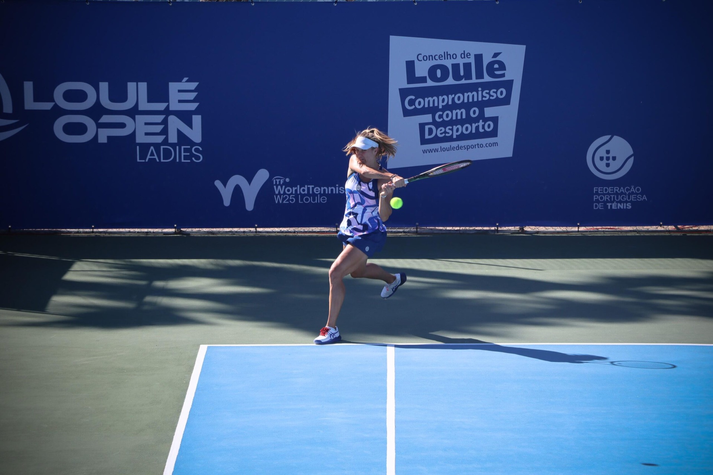

01OS PRIMEIROS PONTOS
Pequenos
grandes jogadores.
Mini-ténis e iniciação para descobrir o desporto, ganhar confiança e aprender a jogar.
Aulas para crianças
BEM-VINDO AO TEU CAMPO
Do primeiro contacto com a raquete à competição.
Há um lugar para ti no Clube de Ténis de Loulé.
01 / O NOSSO CLUBE
Em Loulé, o ténis junta quem está a começar, quem joga pelo prazer de jogar e quem quer ir mais longe.
Entre aulas, treinos e torneios, partilhamos o campo e a vontade de evoluir. Dentro e fora das quatro linhas.
Vem conhecer-nos02 / AULAS DE TÉNIS
Uma primeira raquete ou um novo desafio.
Descobre por onde começar.
Mini-ténis e iniciação para descobrir o desporto, ganhar confiança e aprender a jogar.
Aulas para criançasComeçar do zero, regressar ao campo ou aperfeiçoar a técnica. O ténis também é para ti.
Aulas para adultosAperfeiçoamento e competição para quem quer desenvolver o seu jogo e abraçar novos desafios.
Treino de competiçãoContacta o clube para conhecer horários, valores e disponibilidade. Os pedidos abrem no teu email.
03 / A ENERGIA DA COMPETIÇÃO
Dos encontros do clube aos torneios Loulé Open e Loulé Ladies Open, vive o ténis de perto.
Consultar torneiosCalendário e inscrições na TieTennis · abre noutro separador
LOULÉ
OPEN+LADIES
OPEN
ANTES DO PRIMEIRO SERVIÇO
O clube disponibiliza aulas de iniciação. Contacta-nos para encontrar a modalidade e o grupo adequados ao teu nível.
Sim. A oferta inclui mini-ténis, aulas para adultos, aperfeiçoamento e competição. Confirma com o clube os grupos e horários disponíveis.
Envia um email para ctloule.marketing@gmail.com. O clube poderá indicar os horários, valores e condições atualizados.
No Complexo de Ténis, 8100-771 Loulé, no Algarve, Portugal. Encontras abaixo uma ligação para consultar a localização no mapa.